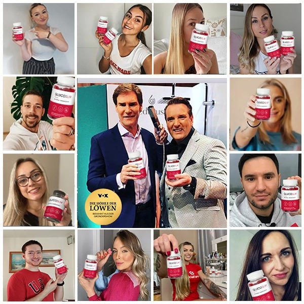

Sowohl Ralf Dümmel als auch Carsten Maschmeyer glauben, dass dies eines der Top-3-Produkte von Die Höhle der Löwen im Jahr 2024 sein wird
Ein Bericht von Ella Schmitz | Freitag, Januar 26, 2024

( Freitag, Januar 26, 2024 - Es war die beliebteste Folge in der langen Geschichte von „Die Höhle“ – die Schwestern Anna, Lena und Janina Martin konnten mit ihrem einzigartigen Produkt die gesamte Jury überzeugen.)

Noch nie zuvor hat sich die gesamte Jury der „Höhle“
unabhängig voneinander dazu entschlossen
Millionen von Euros in ein einziges Produkt zu
investieren.
Nachdem die Jury unglaubliche
25% an Anteilen der Firma der Schwestern gekauft hatte, halfen sie den drei Schwestern persönlich ein re-branding und ein re-packing ihres
Wunderproduktes vorzunehmen.
Die Schwestern hatten ein großartiges Produkt, jedoch
hatten sie Probleme mit dem Marketing. Die drei
Schwestern, die über Nacht berühmt wurden, haben ein
Studium in der Ernährungswissenschaft sowie
Sportmedizin hinter sich. Die Investoren erkannten
sofort, dass es sich um ein großartiges Produkt
handelt und die Schwestern "nur" Hilfe bei der
Vermarktung benötigten.
Ihr Produkt priesen die
drei Schwestern
als „größten Schritt in der Geschichte
des Gewichtsabnehmens“. Die Investoren waren zuerst skeptisch, jedoch
konnten die drei Schwestern die Effektivität ihres
Produkts mit wissenschaftlichen Studien belegen.
 Auch auf den sozialen Medien Instagram und Tiktok
sind die Glucoslim beliebt. Tausende Videos gibt es
dort bereits über das Produkt.
„Wir waren geschockt.
Wir hatten eigentlich nur damit gerechnet ein paar Tipps
zur Vermarktung zu bekommen.
Wir waren uns nicht mal sicher, ob wir überhaupt
einen einzigen Investor für uns gewinnen könnten.“,
sagte Janina in der Folge.
Nach ganzen 5 Angeboten der einzelnen Investoren
brachen die drei Schwestern
in Tränen aus.
Auch auf den sozialen Medien Instagram und Tiktok
sind die Glucoslim beliebt. Tausende Videos gibt es
dort bereits über das Produkt.
„Wir waren geschockt.
Wir hatten eigentlich nur damit gerechnet ein paar Tipps
zur Vermarktung zu bekommen.
Wir waren uns nicht mal sicher, ob wir überhaupt
einen einzigen Investor für uns gewinnen könnten.“,
sagte Janina in der Folge.
Nach ganzen 5 Angeboten der einzelnen Investoren
brachen die drei Schwestern
in Tränen aus.
„Es fühlte sich nicht echt an. Vor uns saßen die
erfolgreichsten Unternehmer Deutschlands. Und diese
wollten unbedingt ein Teil von unserem Projekt sein.
Ich glaube wir haben unser Produkt die ganze Zeit unterschätzt. Es war
unglaublich und sehr emotional für uns!“ erklärt
Anna.
Die Schwestern sind die ersten Teilnehmer in
der langen Laufzeit der Show, die Standing Ovations
und
Investitionen von allen Jury-Mitgliedern
erhielten. Das Leben der drei hat sich über Nacht schlagartig geändert.
 Seit dem diese unglaubliche Folge aufgezeichnet wurde
sind die drei Schwestern hart am Arbeiten und nutzen
die Tipps ihrer Investoren.
Seit dem diese unglaubliche Folge aufgezeichnet wurde
sind die drei Schwestern hart am Arbeiten und nutzen
die Tipps ihrer Investoren.
„Wir haben das Aussehen unseres Produkts komplett neu
gestaltet und haben uns eine neue Verpackung
überlegt.“ sagt Anna. "Wir sind gut im Labor und in der Produktentwicklung, aber wir
haben keine Ahnung von Marketing. Deshalb sind wir
heil froh, dass uns die Investoren so gut
unterstützen."
Die
drei haben ihr Produkt, mit dem sie Millionen von
Euro an Investorengeldern einnahmen, vor kurzem
bekannt gegeben.
„Das Produkt, welches wir in der Show gezeigt
haben, wurde jetzt in
Glucoslim
rebranded. Es ist die Original Formel – alles was
wir geändert haben sind der
Name und die Verpackung, sodass wir es besser ausserhalb von Europa
vertreiben können.“ erklärt Janina. "Wir sind jetzt
bereit in 2023 den Markt in den USA zu erobern. Auch die derzeitige
Krise kann uns nicht aufhalten!"
Die drei starteten den Produktverkauf
durch ihre Firmen-Website
und waren innerhalb 5 Minuten ausverkauft.
„Wir haben sogar extra mehr Ware produziert als
sonst. Wir haben quasi unser ganzes privates Geld in
Ware gesteckt bevor wir in die Sendung sind. Wir
haben ungefähr 10 mal so viel Produziert wie üblich.
Es war wirklich anstrengend. Wir dachten, dass wir
genug auf Lager hätten aber falsch! Wir haben
tatsächlich alles innerhalb von 5 Minuten verkauft!“
freute sich Anna. "Es war einfach Wahnsinn!"
Während die „Höhle“-Juroren auf ihre clevere Investition anstoßen,
schwärmen Frauen online von Glucoslim
und
sagen, dass die Resultate dieses Produktes ihr Leben
verändert haben.
Klinische Versuche von Glucoslim haben
beweisen können,
dass Frauen die dieses Produkt nutzen ihren
Fettanteil drastisch reduzieren konnten
und das dies auch, bei weiterer Nutzung, so bleibt.

Trotz der guten Erfahrungen und vielen Verkäufe des
Produkts standen die Löwen den Schwestern skeptisch
gegenüber. Doch nachdem die Schwestern die klinischen
Studien vorstellten, wurde auch der letzte Löwe
überzeugt.
Damit konnten die drei Schwestern die Investoren überzeugen
 Die Schwestern haben ihre ganze Energie dafür
aufgebracht eine Formel zu entwickeln. Die klinischen
Studien konnten mit ihrer Wirksamkeit jeden
Investor
überzeugen.
Die Schwestern haben ihre ganze Energie dafür
aufgebracht eine Formel zu entwickeln. Die klinischen
Studien konnten mit ihrer Wirksamkeit jeden
Investor
überzeugen.
Im Gegensatz zu vielen anderen Produkten die bereits in der Sendung vorgestellt wurden hat Glucoslim mehrere Testreihen durchlaufen in denen folgende Punkte festgestellt wurden:
- die hochdosierten Glucoslim werden durch die spezielle Formel von der Magenschleimhaut sofort aufgenommen
- durch das gründliche Kauen kann auch die Mundschleimhaut viele Inhaltsstoffe direkt aufnehmen
- das Präparat reguliert den Stoffwechsel des Körpers auf ein normales Niveau
- reguliert den Blutzuckerspiegel auf ein optimales Level, sodass es dem Körper schwerer fällt Fett in Zellen einzulagern
- vermeidet Heisshunger, sodass die Kalorienzufuhr verringert wird
Die Schwestern konnten sogar eine ganze Reihe Promis für sich gewinnen

“Glucoslim ist unglaublich. Ich wurde gefragt ob ich die Spezial-Gummibärchen ausprobieren möchte und habe direkt ja gesagt. Ich habe nach der Einnahme viel weniger Hunger und fühle mich super.“ - Maite Kelly

"Ich war Teilnehmerin bei der ersten Studie zu Glucoslim. Mein Arzt hat mich für die Testreihe angemeldet, da mein Übergewicht lebensbedrohlich war. Ich habe 44 Kilo in der Studie mit Glucoslim abgenommen. Ohne Sport und ohne Ernährung. Ich habe dadurch zwar schlaffe Haut am Bauch, weil ich so viel abgenommen habe, aber diese werde ich mir wegmachen lassen. Ich habe sehr gute Erfahrungen mit Glucoslim gemacht und hatte keine nennenswerten Nebenwirkungen." - Anja

„Ich habe einen sehr hektischen Zeitplan und dadurch nicht viel Zeit für Sport. Genau deshalb liebe ich Glucoslim! Nur ein paar Minuten am Morgen und am Abend reichen bei mir aus!“- Sonya Kraus
Gib dir selbst die Promi Behandlung
Die Glucoslim Spezial-Gummibärchen gibt es derzeit nur Online zu kaufen. Die Schwestern arbeiten gerade an einer Apothekenzulassung für Deutschland.
Das Produkt ist schwierig in der Herstellung und die Nachfrage ist derzeit höher als die Produktion. "Es ist wichtig für uns keine Kompromisse bei der Qualität zu machen", so Anna. "Aber durch die Löwen haben wir unsere Produktionskapazitäten stark ausbauen können, sodass wir alle Kundinnen und Kunden sofort beliefern können. Das fühlt sich sehr großartig an und jeder ist zufrieden."
Glucoslim war seit der Ausstrahlung im September bereits 3 Mal ausverkauft. Als nächstes Ziel für 2024 haben sich die Schwestern mit den Löwen den amerikanischen Markt vorgenommen.